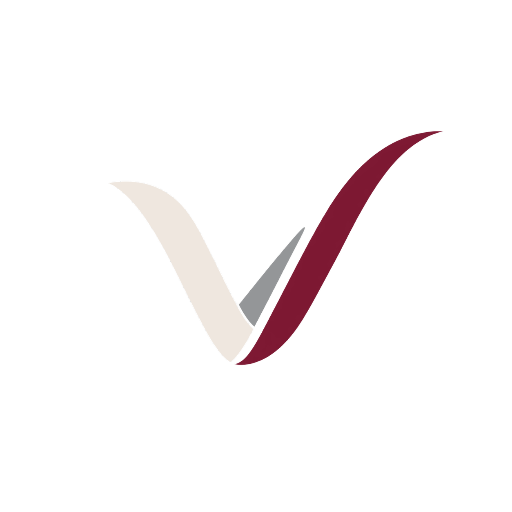

VÉRTICE
Pessoas & Estratégia
Manual Executivo de Marca, Diretrizes Cromáticas, Tipografia Nobre, Aplicações de Logotipos, Template de Proposta Comercial, Divulgação de Vagas, Kit de Redes Sociais com Carrossel e Assinatura de E-mail Corporativa.
A Arquitetura da Marca Vértice

VÉRTICEA evolução de JP Consultoria para VÉRTICE — Pessoas & Estratégia marca o reposicionamento definitivo de uma consultoria técnica de RH para uma banca consultiva de alta governança, orientada a conselhos, CEOs e diretores de médias e grandes empresas.
Vértice é o ponto geométrico de convergência onde duas retas se encontram. No negócio, representa o exato ponto de alinhamento onde o capital humano e as metas financeiras da corporação se tornam uma única força motriz.
Representa a solidez técnica, a escuta atenta da cultura organizacional e o diagnóstico profundo da maturidade da empresa cliente.
O elo de sustentação central que conecta a liderança, as equipes e a estratégia de longo prazo do conselho. Destacado em cinza no fundo escuro para perfeita visibilidade.
O vetor ascendente apontado para o alto, simbolizando crescimento de margem, retenção de talentos-chave, sucessão e perenidade corporativa.
Decisões sobre pessoas baseadas em dados, método e previsibilidade.
Interlocução sênior com acionistas, conselhos de família e C-Level.
12 anos construindo relações que continuam e geram valor sustentável.
Aplicações Oficiais & Conformidade


- • Utilizar exclusivamente os arquivos PNG transparentes de alta resolução do kit;
- • Preservar a área de não-interferência mínima igual à altura da letra "V";
- • Na versão escura, manter o traço intermediário em cinza para diferenciar os 3 traços;
- • Redução mínima legível: 120px de largura para digital ou 28mm para impresso.
- • É expressamente proibido reconstruir a logo por código (CSS, Canvas ou SVG genérico);
- • Nunca alterar proporções, espessuras ou disposição do símbolo e lettering;
- • Nunca aplicar sombras pesadas, bisel, contornos luminosos ou efeitos 3D;
- • Não posicionar a marca sobre fotos visualmente poluídas sem contraste adequado.
Paleta de Cores & Proporção Áurea
Regra de Ouro Cromática: O Vinho (#4D1021) é uma joia de assinatura e nunca deve sufocar a composição. Seu valor reside na precisão cirúrgica de aplicação sobre a base quente Ivory.
| Nome | Hexadecimal | RGB | CMYK Aproximado | Papel no Ecossistema |
|---|---|---|---|---|
| Ivory | #EFE7DF | 239, 231, 223 | 0, 3, 7, 6 | Fundo principal, cartões executivos e respiro editorial |
| Preto Profundo | #010101 | 1, 1, 1 | 0, 0, 0, 100 | Títulos, corpo de texto, bordas de cards e autoridade |
| Cinza Grafite | #949698 / #505253 | 148, 150, 152 | 2, 1, 0, 40 | Traço intermediário da logo sobre escuro e divisores |
| Vinho Vértice | #4D1021 | 77, 16, 33 | 0, 79, 57, 70 | Haste direita ascendente, botões de ação e selos |
Sistema Tipográfico Editorial
Serifada de corte editorial nobre. Transmite tradição acadêmica, peso intelectual e governança corporativa.
Sans-serif geométrica moderna. Utilizada para leitura contínua, tabelas, menus de UI, números e dados de propostas.
| Elemento | Família | Peso & Tamanho | Entrelinha & Kerning | Aplicação Prática |
|---|---|---|---|---|
| Display / Hero | Cormorant | 500 Medium · 64–72px | line-height: 1.05 | -0.02em | Capa de apresentações e abertura do site |
| H1 Institucional | Cormorant | 600 SemiBold · 48–56px | line-height: 1.12 | -0.015em | Títulos de seções principais e propostas |
| H2 de Bloco | Cormorant | 500 Medium · 32–38px | line-height: 1.20 | 0.0em | Capítulos, subtítulos e cases executivos |
| Body Large | Montserrat | 500 Medium · 18px | line-height: 1.60 | 0.0em | Lead de artigos e parágrafos de introdução |
| Body Text | Montserrat | 400 Regular · 15–16px | line-height: 1.70 | 0.0em | Corpo de texto corrido em relatórios e contratos |
| Eyebrow / Kicker | Montserrat | 700 Bold · 11–12px | line-height: 1.0 | +0.22em | Rotulagem uppercase com espaçamento amplo |
Template de Proposta Comercial A4
ESTRITAMENTE CONFIDENCIAL
Preparado para: Grupo Industrial Cliente S.A. · A/C Diretoria Executiva & Conselho de Administração.
| Pilar | Escopo de Intervenção Técnica | Entregável Chave |
|---|---|---|
| C · Cultura | Diagnóstico de maturidade executiva e escuta profunda | Matriz de Clima & Riscos de Turnover |
| O · Organização | Estruturação de alçadas, matriz RACI e governança de RH | Arquitetura de Cargos de 1º Escalão |
| R · Resultados | Formação de líderes operacionais e metas individuais | Painel de Indicadores de Gestão (KPIs) |
| E · Evolução | Acompanhamento assistido e sustentação comitê 90d | Relatório de Impacto e Sucessão |
Formatada para leitura de conselheiros e diretores. Rejeita tabelas genéricas de SaaS e adota estética de banca executiva com termos jurídicos (NDA) integrados.
Todas as propostas contam com salvaguarda jurídica irrevogável sobre organogramas, planos de sucessão e dados estratégicos das empresas clientes.
Arte de Divulgação de Vagas Executivas
PROCESSO CONFIDENCIAL
- → Liderança de equipes industriais com mais de 350 profissionais;
- → Domínio comprovado de lean manufacturing e manutenção preditiva;
- → Pacote de remuneração sênior + PLR agressiva por metas.
- → Estruturação de governança corporativa e sucessão familiar;
- → Implementação de avaliação por competências e matriz RACI;
- → Salário competitivo de diretoria + bônus de performance.
Ao contrário de vagas operacionais de bancos de emprego, as contratações da Vértice atingem líderes que atualmente ocupam posições ativas em outras empresas. O visual sóbrio, a ausência de elementos informais e a ênfase na confidencialidade transmitem a segurança necessária para candidaturas espontâneas de alto escalão.
Carrossel Editorial (1080×1350)
O · Organização & Papéis
R · Resultados & KPIs
E · Evolução & Sucessão
Assinatura de E-mail & Homologação

|
Juliana Pinheiro
Sócia-Fundadora & Diretora de Estratégia
📞 (81) 99999-7566 | ✉️ juliana@verticeestrategia.com.br
🌐 verticeestrategia.com.br | 📍 Recife / PE · Atuação Nacional
|
|
CONFIDENCIALIDADE & LGPD: Esta mensagem é confidencial e protegida pela Lei nº 13.709/2018 (LGPD).
|
|
Atestamos que os ativos e especificações contidos neste dossiê constituem a entrega integral da Fase 1 (Identidade Visual & Branding) do projeto de estruturação institucional da Vértice — Pessoas & Estratégia. O sistema atende rigorosamente aos padrões de excelência visual, consistência técnica e conformidade para aplicação web e impressa.
Juliana Pinheiro · Sócia-Fundadora
Equipe de Engenharia & Design Editorial